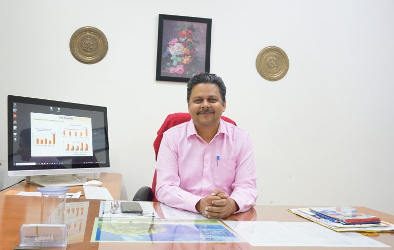

The challenge in today’s global and highly competitive markets are much high and one need to perform with utmost quality and professionalism. It gives me immense pleasure in stating that recently SLIET has achieved 56th rank for best Engineering College in India by National Institutional Ranking Framework published by Ministry of Human Resource Development (MHRD) in April 2016.
We ensure that each student is given right industry exposure & skill development to meet the high-end corporate expectations. The T&P Department continuously look at job learning opportunities for students through live projects, research assignments, competitions, management games/ quizzes, industrial training, guest lectures, conferences, and seminars.
We also follow a stringent for Soft Skills Development & Corporate Communication which indeed is the utmost requisite to be in any industry. The dedicated team helps to bridge the gap for students between their campus and corporate life. It encompasses development of overall personality, communication skills, corporate etiquette and grooming while instilling right attitude towards leading and working in a team with professional ethics and time management skills. Projects are an integral part of the academic curriculum. The students are given opportunity to undergo Summer Internships with different organizations which provide them with basic understanding of the company’s operations; this ultimately enhances the adaptability of students at large & enables a student to evaluate his/her own interest in the company and thus identify an appropriate fit, both for summer internship and final placements.
SLIET is committed to offering good career opportunities to each student through excellent teaching and placement support. On behalf of the SLIET family, we invite each and every company and industry to visit our institute for campus recruitment and other purposeful academic activities of mutual interest.